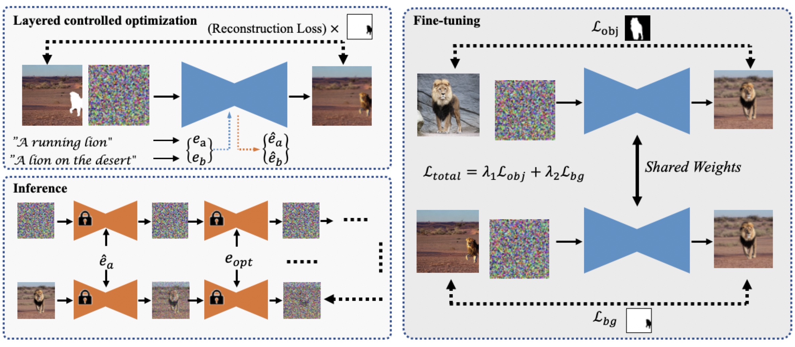

Our method achieves layered image editing through text descriptions, enabling simultaneous modifications of backgrounds and specific subjects,
such as background replacement, object resizing, and complex non-rigid changes.
Our method achieves layered image editing through text descriptions, enabling simultaneous modifications of backgrounds and specific subjects,
such as background replacement, object resizing, and complex non-rigid changes.
Text-guided image editing has recently experienced rapid development. However, simultaneously performing multiple editing actions on a single image, such as background replacement and specific subject attribute changes, while maintaining consistency between the subject and the background remains challenging. In this paper, we propose LayerDiffusion, a semantic-based layered controlled image editing method. Our method enables non-rigid editing and attribute modification of specific subjects while preserving their unique characteristics and seamlessly integrating them into new backgrounds. We leverage a large-scale text-to-image model and employ a layered controlled optimization strategy combined with layered diffusion training. During the diffusion process, an iterative guidance strategy is used to generate a final image that aligns with the textual description. Experimental results demonstrate the effectiveness of our method in generating highly coherent images that closely align with the given textual description. The edited images maintain a high similarity to the features of the input image and surpass the performance of current leading image editing methods. LayerDiffusion opens up new possibilities for controllable image editing.

Our method utilizes a layered controlled optimization strategy to refine text embeddings and a layered diffusion strategy to fine-tune the diffusion model. During inference, an iterative guidance strategy is employed to directly generate images aligning with the multiple editing actions described in the input text.
We primarily compare our proposed image editing method with previous text-driven methods, such as SDEdit, Imagic and PnP. It is worth noting that Imagic necessitates fine-tuning of both the network and text embeddings, while our method adopts a similar fine-tuning approach. Our method generates the best results.

We present more edited results. Each triplet consists of the original image on the left, the edited result on the right, and a small reference image enclosed within a red box.

Refer to the pdf paper linked above for more details on qualitative, quantitative, and ablation studies.
@incollection{li2023layerdiffusion,
title={Layerdiffusion: Layered controlled image editing with diffusion models},
author={Li, Pengzhi and Huang, Qinxuan and Ding, Yikang and Li, Zhiheng},
booktitle={SIGGRAPH Asia 2023 Technical Communications},
pages={1--4},
year={2023}
}